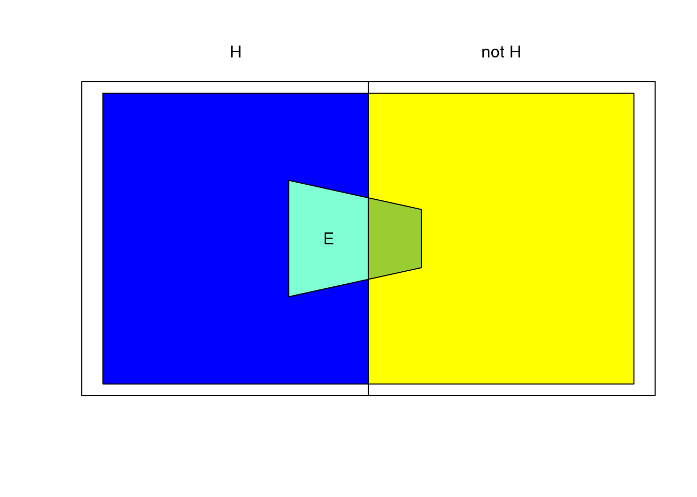
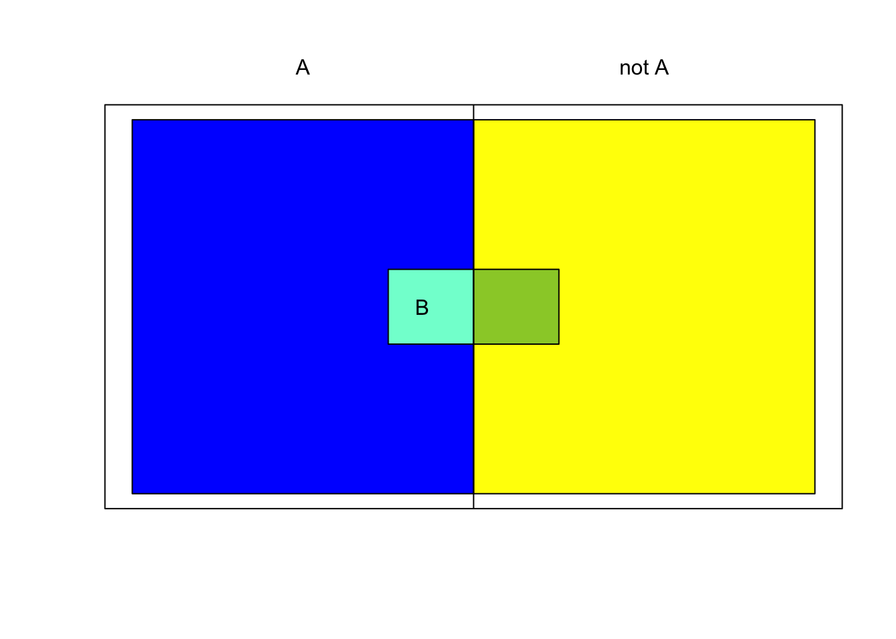

{kind=link}

ECD Intro
Bayesian Networks in Educational Assessment
Part I: An introduction to evidence-centered assessment design
Test Design
The Interplay of Design and Statistical Modeling
Statistical models must be selected/tailored according to the needs of the assessment
Such selection and adaptation is only meaningful in the larger context of the assessment design
Understanding the discipline of assessment design is a necessary prerequisite for statistical modeling
Evidence Centered Design is an assessment design framework with general applicability and utility
Test Design Considerations
- Stakeholders
- Requirements
- Purpose of the test
- Intended population
- Prospective Score Report
- Evidence-Centered Design
- Claims
- Validity
- Specifications
Evidence-Centered Design—Advantages
- Evidence Centered Design (ECD) provides a mechanism for
- Capturing and documenting information about the structure and strength of evidentiary relationships.
- Coordinating the work of test developers in authoring tasks and psychometricians in calibrating the measurement model.
- Documenting the scientific information that provides the foundation for the assessment and its validity.
Evidence-Centered Design–Central Question
Evidence-centered design centers around the questions:
“What can we observe about an examinee’s performance which will provide evidence that the examinee has or does not have the knowledge, skills and abilities we wish to make claims about?”
“How can we structure situations to be able to make those observations?”
- This process results in the Conceptual Assessment Framework (CAF)
The Initial Frame
- Why are we measuring?
- What are the goals and the desires for use of this assessment?
- Prospective Score Report
- Who are we measuring?
- Who would take the assessment?
- Who would view results and for what purpose?
- Goals of the assessment that represent the targets around which the rest of the design process is oriented
Conceptual Assessment Framework (CAF)
What we measure = Student Proficiency Model
How we measure = Evidence Model
Where we measure = Task Model
How Much we measure = Assembly Model
Customization = Presentation & Delivery Models
Activity 1: Driver’s License Exam
Redesign the driver’s licensure exam
Write down several claims you would like to make about people who receive a driver’s license
Group your claims into several proficiency variables related to the driver’s test
Do the claims hold for high, medium or low values of those variables?
Use Netica as a drawing tool and add your variables
Activity 1 (cont)
List a bunch of activities that you may want prospective drivers to do in their exam
What is environment of the task
What are manipulable features of the task?
Pick one of the tasks you created and build an evidence model for it.
What are some observable outcomes? their possible values?
Which proficiencies do they measure?
Think a bit about putting this driver’s test together
How many tasks do we need of what types?
How much time will be spent in written tests? On the road? In simulators?
How do we verify the identity of applicants?
ECD and Bayes Nets
Represent Qualitative ECD argument with a graph (Domain Modeling) (Session I)
Turn graphical structure into probability distribution over proficiency variables and observable outcomes (Bayes net; Session I)
Perform inference (scoring) using that Bayes net (Session II)
Express probabilities in terms of unknown parameters – learn parameters (Session III)
Refine model based on how well it fits data (Session IV)
Cup and Cap notation
In probability theory, events are sets (sets of balls in the urn).
Let \(A\) and \(B\) be two events
Union: Either \(A\) or \(B\) occurs \[ A \cup B \qquad A \vee B \]
Intersection: Both \(A\) and \(B\) occur \[ A \cap B \qquad A \wedge B \]
- Sometimes also just \(\Pr(A,B)\)
Complement: Not \(A\) \[ \neg A \qquad \overline{A} \]
- \(\Pr(\overline{A}) = 1- \Pr(A)\)$
Conditional Probability
\[\Pr(E|H) = \frac{\Pr(E \cap H)}{\Pr(H)} \]
Law of Total Probability
\[ \Pr(E) = \Pr(E|H) \Pr(H) + \Pr(E|\overline{H})\Pr(\overline{H}) \]
\[ \Pr(B) = \sum_i \Pr(B|A_i)\Pr(A_i) \]
Where $ A_i A_j =$ and \(\bigcup_i A_i = \Omega\)
Bayes Theorem
\[ \Pr(H|E) = \frac{\Pr(E|H)\Pr(H)}{\Pr(E)} \]
\[ = \frac{\Pr(E|H)\Pr(H)}{\Pr(E|H)\Pr(H)+\Pr(E|\overline{H})\Pr(\overline{H})}\]
| Prior | \(\Pr(H)\) |
| Likelihood | \(\Pr(E|H)\);\(\Pr(E|\overline{H})\) |
| Posterior | \(\Pr(H|E)\) |
[Rare Disease Problem]https://pluto.coe.fsu.edu/rdemos/IntroStats/RareDisease.Rmd
Independence

\[ \Pr(B) = \Pr(B|A) = \Pr(B|\overline{A}) \] \[ \Pr(A) = \Pr(A|B) = \Pr(A|\overline{B}) \] \[ \Pr(A \cap B) = \Pr(A|B)\Pr(B) = \Pr(A)\Pr(B) \]
- Knowing \(A\) provides no information about \(B\) and vise versa.
Accident Proneness (Feller, 1968)
- Driving Skill: 5/6 Normal, 1/6 Accident Prone
- Probability of an accident in a given year
- 1/100 for Normal drivers
- 1/10 for Accident prone drivers
- Accidents happen independently in each year
- What is the probability a randomly chosen driver will have an accident in Year 1?
- Given a driver had an accident in Year 1, what is probability of accident in Year 2?
Accident Proneness (Year 1)
What is the probability a randomly chosen driver will have an accident in Year 1? Year 2?
\(\Pr(Y_i)\). – Prob of accident in a given year.
\[ \Pr(A_i) = \Pr(A_i|N)\Pr(N) + \Pr(A_i|\overline{N})\Pr(\overline{N}) \]
DrivingSkill <- c(N=5/6,A=1/6)
AccLike <- cbind(Yes=c(N=1/100,A=1/10),No=c(N=99/100,A=9/10))
Year1 <- sweep(AccLike,1,DrivingSkill,"*")
Year1 Yes No
N 0.008333333 0.825
A 0.016666667 0.150sum(Year1[,"Yes"])[1] 0.025Accident Proneness (Year II)
Given a driver had an accident in Year 1, what is probability of accident in Year 2?
\[ \begin{array}{rcl} \Pr(A_1 \cap A_2) &=& \Pr(A_1 \cap A_2|N)\Pr(N) + \Pr(A_1 \cap A_2|\overline{N}) \Pr(\overline{N}) \\ &=& \Pr(A_1|N)\Pr(A_2|N)\Pr(N) + \Pr(A_1|\overline{N}) \Pr(A_2|\overline{N}) \Pr(\overline{N}) \end{array} \]
Acc2Like <- AccLike
Acc2Like[,"Yes"] <- AccLike[,"Yes"]^2
Acc2Like[,"No"] <- 1 -Acc2Like[,"Yes"]
Year12 <- sweep(Acc2Like,1,DrivingSkill,"*")
Year12 Yes No
N 8.333333e-05 0.83325
A 1.666667e-03 0.16500sum(Year12[,"Yes"])[1] 0.00175Accident Prone (Chain)
\(\Pr(Y_2 | Y_1)\) – Accident in 2nd year given accident in first year.
sum(Year12[,"Yes"])/sum(Year1[,"Yes"])[1] 0.07Explanation
\(\Pr(S=\text{normal}|A_i)\) – Probability in normal category given accident.
DiagrammeR::grViz("
digraph AP {
Driving -> Year1;
Driving -> Year2;
}")Conditional Independence
- Conditional Independence: $(Y_1,Y_2|S) = (Y_1|S) (Y_2|S) $
- Years are marginally dependent.
- Separation in graph tells the story.
- Information flows from from Year1 to Driving Skill to Year2
Another Example
DiagrammeR::grViz("
digraph Autotrain {
Train -> COVID;
Train -> MaskOnTrain;
MaskOnTrain -> COVID;
Vaccine -> COVID;
COVID -> fever;
COVID -> congestion;
COVID -> pcrTest;
}")Competing Explanations
DiagrammeR::grViz("
digraph CompExpl {
Skill1 -> X
Skill2 -> X
}")Skill1andSkill2are (a priori) independent in population- Task
Xrequires both skills (conjunctive model) - Answer the following questions:
- What is posterior of
Skill2after learningX=False, andSkill1=High? - What is posterior of
Skill1after learningX=False, andSkill2=High? - What is true of joint posterior of
Skill1andSkill2after learningX=False?
- What is posterior of
D-Separation
For , , and edges conditioning on middle variables renders outer variables independent
- \[ A \leftarrow B \leftarrow C\]
- \[ A \rightarrow B \leftarrow C\]
- \[ A \rightarrow B \rightarrow C\]
For (collider) edges, if middle variable (or descendent is known) then variables are dependent
- \[ A \leftarrow B \rightarrow C\]
A path is active if collider with middle node observed, or non-collider with middle node unobserved
D-separation Example
DiagrammeR::grViz('
digraph DSep {
rankdir = "LR";
A -> B; A -> C;
B -> D; C -> D;
D -> E -> F;
}')\(B\) and \(C\) are independent if \(A\) is known and all of \(D\), \(E\) or \(F\) are not known.
\(D\) is indepedent of \(F\) if \(E\) is known.
D-Separation Exercise
DiagrammeR::grViz('
digraph DSepEx {
rankdir = "TB";
A -> D; B -> D; B -> E; C -> E;
D -> F; D -> G; E -> G; E -> H;
}')- Are A and C independent if
- We have observed no other variables?
- What could we condition on to make A and C independent?
- We have observed F and H?
- What else could we condition on to make A and C independent?
- We have observed G ?
- What else could we condition on to make A and C independent?
- We have observed no other variables?
Building Up Complex Networks
Pick an ordering of the nodes: \(V_1, V_J)\).
\[p(v_1,\ldots,v_J) = p(v_J|v_{J-1},\ldots,v_1) p(v_{J-1}|v_{J-2},\ldots,v_1) \cdots p(v_2|v_1) p(v_1)\]
\[ = \prod{j=1}^{J} p(v_j|v_{j-1},\ldots, v_1) = \prod_{j=1}^{J} p(v_j|Pa(V_j)) \]
\[Pa(v_j)\] is the set of nodes that come earlier in the sequence.
If \({\cal G}\) is a Bayesian network whose nodes are \({\cal V}\), then we can replace \[Pa(v_j)\] with \[Pa_{{\cal G}}(V_j)\], the parents of \(V_j\) in the graph.
Building Up Complex Networks: IRT
DiagrammeR::grViz('
digraph IRT {
subgraph{ Q[label="θ"] }
subgraph {
X1; X2; andC[shape=none,label="..."]; XJ
}
Q -> X1; Q-> X2; Q->andC [style="invis"]; Q->XJ
}')For example, in IRT, item responses are conditionally independent given \(\theta\):
\[ p(X_1,\ldots,X_J,\theta) = p(\theta) \prod_{j=1}^{J} p(X_j|\theta)\]
Bayes net
DiagrammeR::grViz("
digraph ABN {
A -> C; B -> C;
C -> D; C -> E;
D -> F; E -> F
}")One factor for each node in graph in recursive representation
This factor is conditioned on parents in graph
“Prior” nodes have no parents
\[p(A)p(B)p(C|A,B)p(D|C)p(E|C)p(F|D,E) = p(A,B,C,D,E,F)\]
Digraph must be acyclic
Activity 2: Build a Bayes Net
Pick one of the tasks you created and build an a Bayes net in Netica:
Proficiency variables, their possible values
Observable variables, their possible values
Conditional probabilities between Proficiency variables and Observable variables
Add your observables to the proficiency model you made in Netica